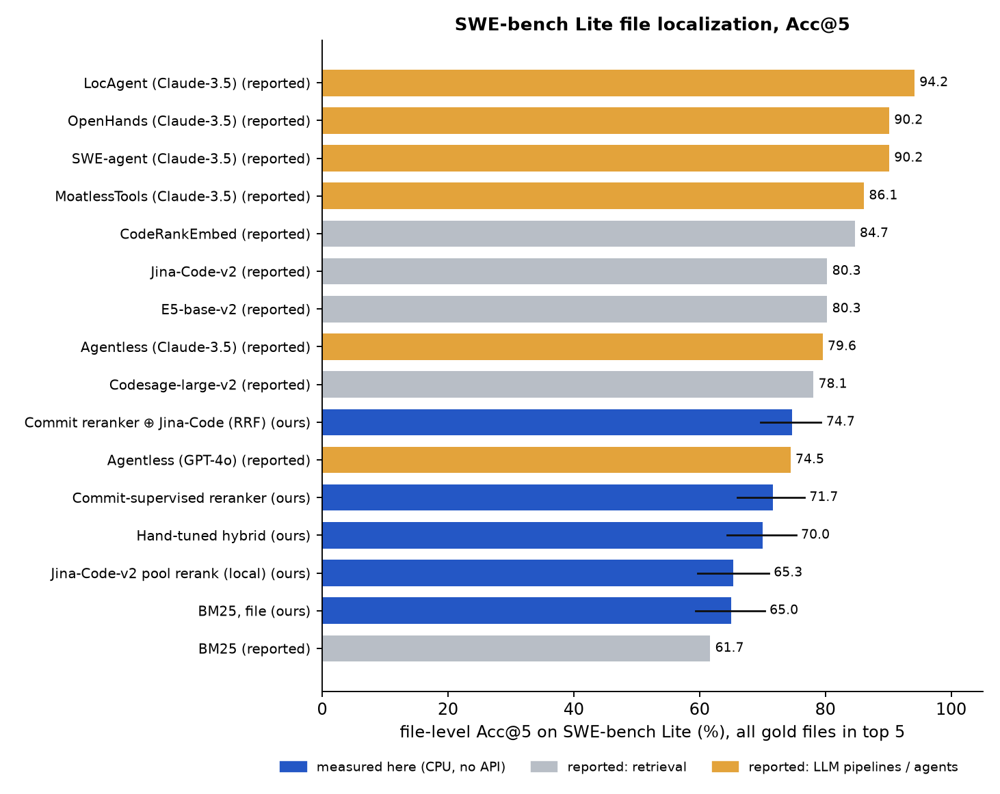
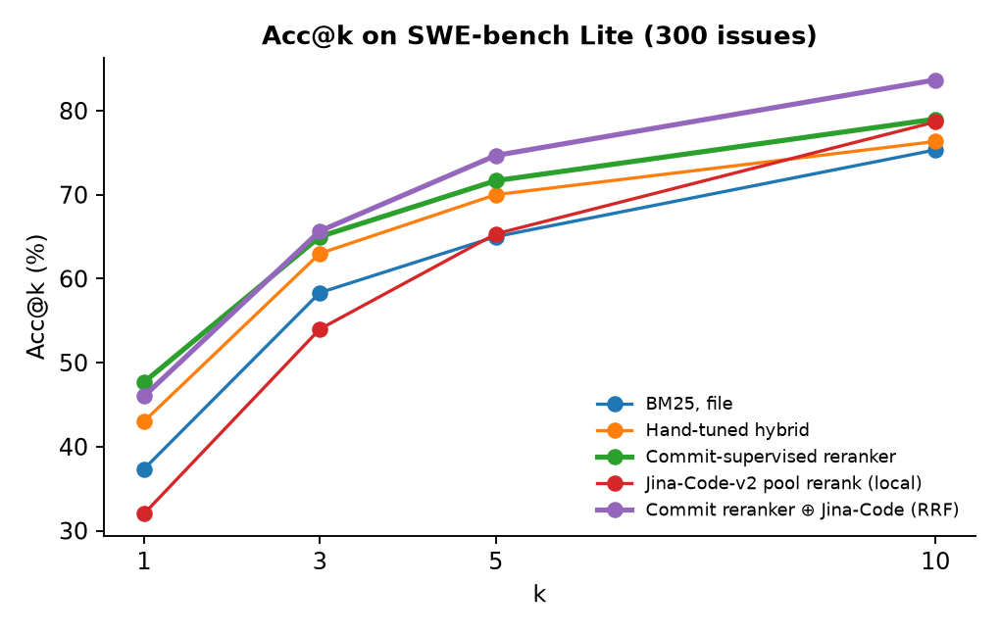
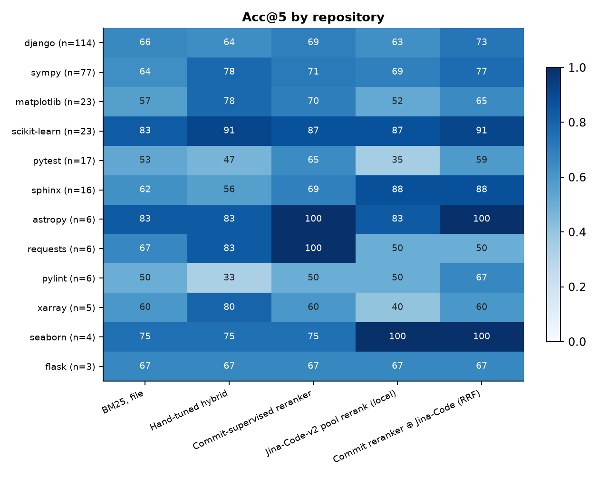

Which files does a coding agent actually need?
File-level localization on all 300 SWE-bench Lite issues. The reranker never sees a SWE-bench label: it is trained on 3,000 commit-message → modified-file pairs mined from each repository's history before its first issue. Best measured: Commit reranker ⊕ Jina-Code (RRF), Acc@5 74.7%.
Leaderboard
Acc@k counts an issue only if its gold file is in the top k (same definition as the source of the reported rows). Measured rows show 95% bootstrap CIs. Reported rows are copied from LocAgent: Graph-Guided LLM Agents for Code Localization (arXiv:2503.09089), Table 4 and were not re-run here.
| Method | Source | Acc@1 | Acc@3 | Acc@5 |
|---|---|---|---|---|
| Commit reranker ⊕ Jina-Code (RRF) | measured | 46.0 [40.3–51.7] | 65.7 [60.3–71.0] | 74.7 [69.7–79.3] |
| BM25 ⊕ Jina-Code (RRF) | measured | 43.0 [37.3–48.7] | 63.7 [58.0–69.3] | 73.3 [68.3–78.3] |
| Commit-supervised reranker | measured | 47.7 [42.0–53.7] | 65.0 [59.3–70.3] | 71.7 [66.0–76.7] |
| Commit reranker, leave-one-repo-out | measured | 46.0 [40.7–51.7] | 64.3 [58.7–69.7] | 71.0 [65.7–76.3] |
| Hand-tuned hybrid | measured | 43.0 [37.3–48.3] | 63.0 [57.3–68.0] | 70.0 [64.3–75.3] |
| Jina-Code-v2 pool rerank (local) | measured | 32.0 [26.7–37.7] | 54.0 [48.3–59.7] | 65.3 [59.7–71.0] |
| BM25, file | measured | 37.3 [32.0–42.7] | 58.3 [52.7–64.0] | 65.0 [59.3–70.3] |
| BM25, chunk-max | measured | 35.3 [30.0–41.0] | 57.0 [51.3–62.7] | 65.0 [59.7–70.3] |
| Path / filename match | measured | 33.7 [28.3–39.0] | 45.7 [40.0–51.0] | 50.3 [44.7–56.0] |
| Symbol match | measured | 18.0 [13.3–22.3] | 36.0 [30.7–41.3] | 42.0 [36.7–47.3] |
| History prior | measured | 5.0 [2.7–7.7] | 12.7 [9.0–16.7] | 22.7 [18.0–27.3] |
| BM25 | reported (sparse retrieval) | 38.7 | 51.8 | 61.7 |
| E5-base-v2 | reported (dense retrieval) | 49.6 | 74.5 | 80.3 |
| Jina-Code-v2 | reported (dense retrieval) | 43.4 | 71.2 | 80.3 |
| Codesage-large-v2 | reported (dense retrieval) | 47.8 | 69.3 | 78.1 |
| CodeRankEmbed | reported (dense retrieval) | 52.5 | 77.7 | 84.7 |
| Agentless (GPT-4o) | reported (LLM pipeline) | 67.2 | 74.5 | 74.5 |
| Agentless (Claude-3.5) | reported (LLM pipeline) | 72.6 | 79.2 | 79.6 |
| SWE-agent (Claude-3.5) | reported (LLM agent) | 77.4 | 87.2 | 90.2 |
| OpenHands (Claude-3.5) | reported (LLM agent) | 76.3 | 89.8 | 90.2 |
| MoatlessTools (Claude-3.5) | reported (LLM agent) | 72.6 | 85.8 | 86.1 |
| LocAgent (Claude-3.5) | reported (LLM agent) | 77.7 | 92.0 | 94.2 |


